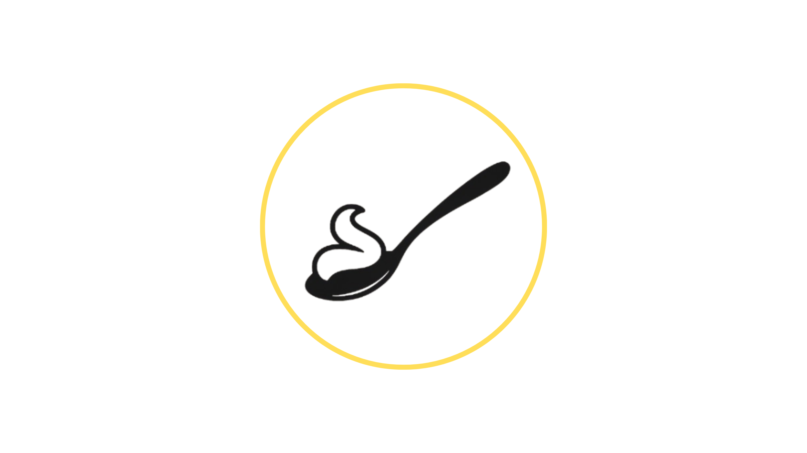

En Auténtico creemos que cada dulce momento merece ser especial. Creamos postres tradicionales y opciones saludables elaboradas con ingredientes de calidad, dedicación y creatividad, para que cada persona pueda disfrutar sabores auténticos sin renunciar al bienestar.
Un dulce momento, una experiencia auténtica.
Nuestra historia

Auténtico nace del sueño de Luz Margery Giraldo, repostera profesional apasionada por crear momentos especiales a través de sabores inolvidables.
Desde Calarcá, Quindío, ha dedicado varios años a transformar ingredientes y recetas en preparaciones hechas con dedicación, creatividad y mucho amor. Su propósito es enriquecer el mundo de la repostería ofreciendo alternativas más saludables e innovadoras, sin dejar de lado los sabores tradicionales que hacen parte de nuestros mejores recuerdos.
Cada creación de Auténtico busca ser más que un postre: un dulce momento, una experiencia auténtica.
Líneas de producción
Saludable
En Auténtico creamos opciones pensadas para disfrutar de un dulce momento de una manera más consciente. Elaboramos preparaciones con ingredientes seleccionados y alternativas que buscan equilibrar sabor, bienestar y calidad, sin perder ese toque casero que hace especial cada creación
Tradicional
Nuestra repostería tradicional celebra los sabores que nos acompañan en los mejores momentos. Tortas, galletas, postres y otras preparaciones elaboradas con dedicación, recetas llenas de tradición y ese sabor auténtico que convierte cada ocasión en algo especial.
Catálogo
Descubre algunas de las creaciones que tenemos para hacer de cada ocasión un momento especial. Los precios publicados corresponden al tamaño, presentación y características indicadas en cada producto.
Si deseas modificar el tamaño, la cantidad, los sabores, la decoración o cualquier otro detalle, el valor puede variar. Escríbenos por WhatsApp y nuestro equipo te ayudará a cotizar una opción personalizada según lo que necesitas.
Cómo pedir
1
Elige tu postre
Explora nuestro catálogo y descubre las opciones que tenemos para ti.
2
Escríbenos por WhatsApp
Usa el botón de WhatsApp para pedir, cotizar tamaños personalizados o contar una idea especial.
3
Personaliza y confirma
Definimos tamaño, sabor, decoración, fecha de entrega y valor final del pedido.
4
Disfruta
Recibe tu creación y comparte un dulce momento lleno de sabor.